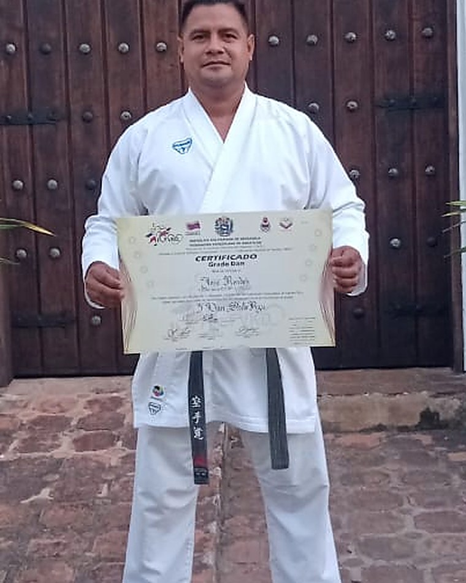
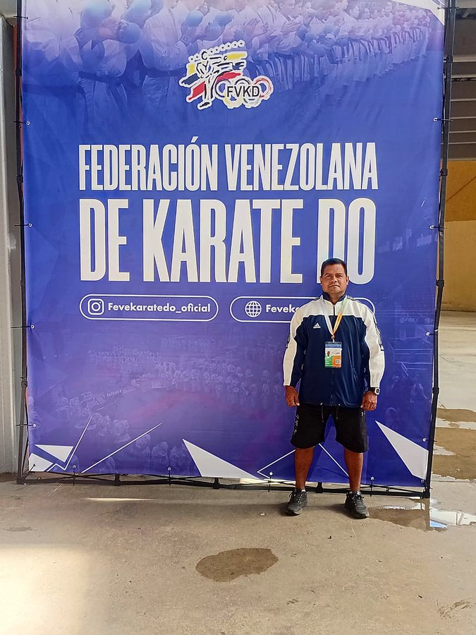
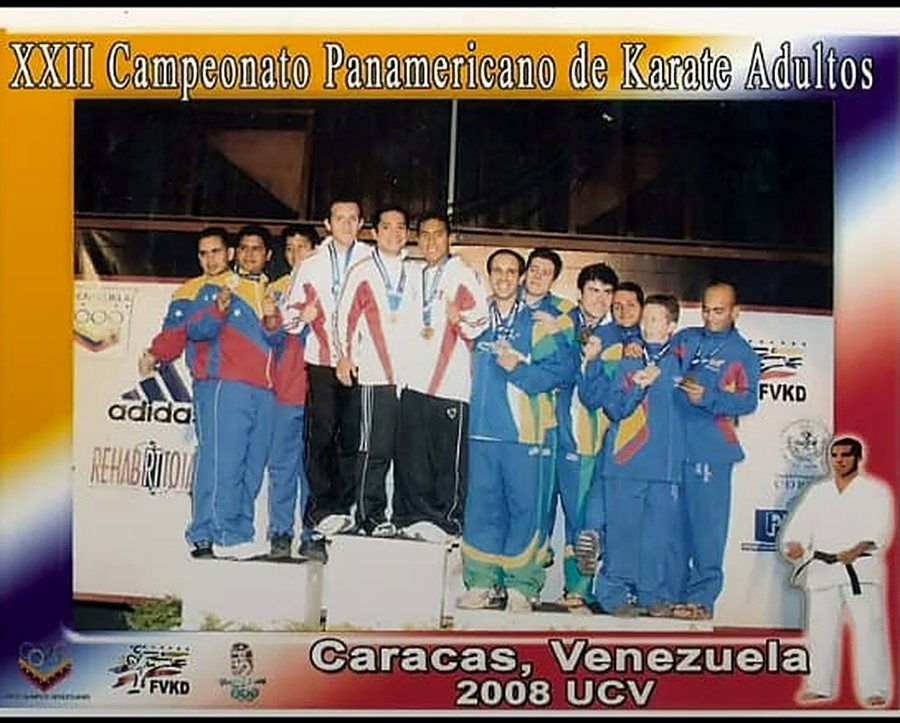
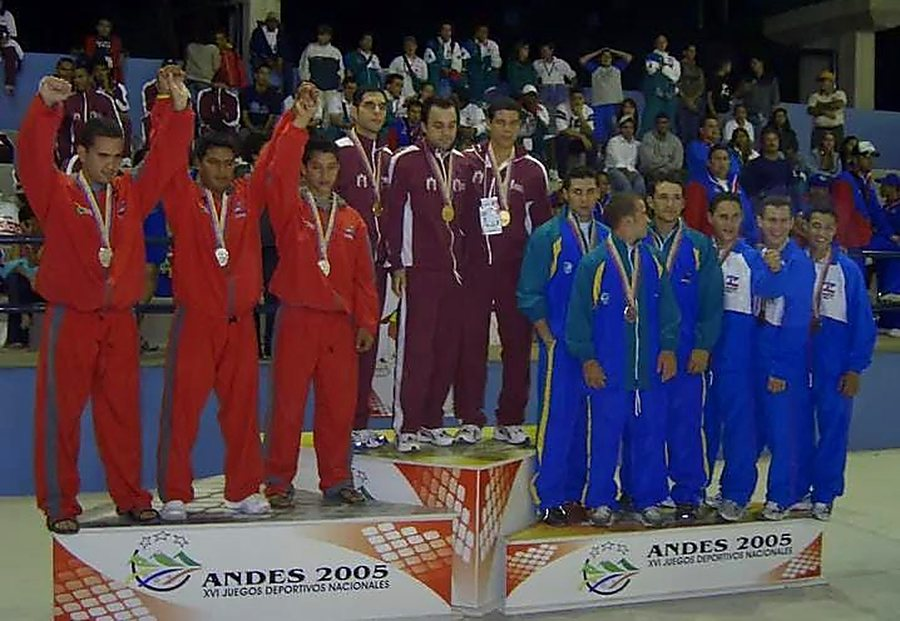
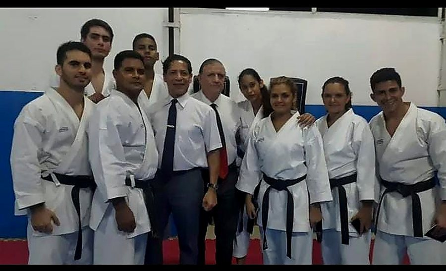
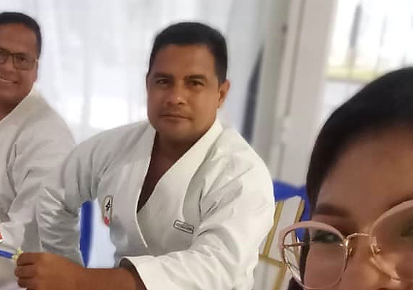
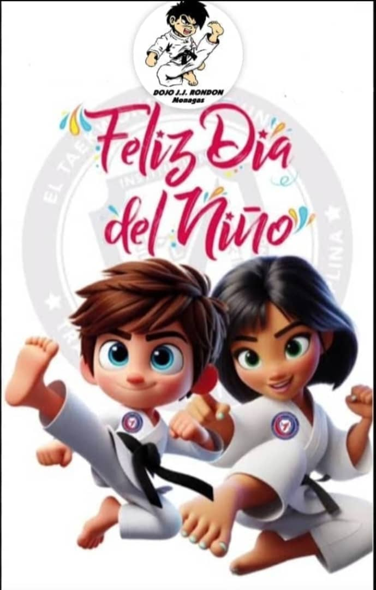

Disciplina
Se entrena en cada saludo, en llegar a tiempo y en el respeto al tatami y al compañero — desde el primer día, y a la medida de cada edad.
Maturín · Monagas — Karate-Do para niños y adultos
Un dojo que forma medallistas — y algo más importante: niños con foco, respeto y constancia. Inscribe a tu hijo, o empieza tú. Los horarios y la mensualidad se preguntan por WhatsApp, sin adivinar.
01 · El dojo
En Maturín, estado Monagas, la Escuela de Karate-Do Dojo J.J. Rondón lleva las iniciales de quien la dirige: el Sensei José Rondón. Aquí el karate se enseña como lo que es — una disciplina que forma el carácter.
La mayoría de nuestros alumnos son niños que crecen en el tatami, y también entrenan adultos que decidieron empezar. Es un dojo que forma medallistas: se entrena para competir, y para la vida.
Toca un valor para ver cómo se entrena en el día a día del dojo.
El día a día
Cada clase tiene su énfasis: hay días de fuerza y acondicionamiento, y días en que el trabajo está en el vocabulario del karate — lo que se dice y se responde en el tatami. Así los tres valores dejan de ser palabras y se vuelven rutina.
Se entrena en cada saludo, en llegar a tiempo y en el respeto al tatami y al compañero — desde el primer día, y a la medida de cada edad.
Cada cinturón es una meta alcanzable. Se avanza paso a paso, y el progreso se ve — en la técnica y en la actitud.
Se compite cuando se está listo, y se entrena para estarlo. La excelencia aquí es hacer bien lo de hoy.
El Sensei

Detrás del Dojo J.J. Rondón está el Sensei José Rondón, quien le da su nombre a la escuela. Cinturón negro de grado Dan, ha dedicado su vida al karate-do — primero como competidor y hoy, sobre todo, como maestro.
Su camino lo ha llevado a tatamis dentro y fuera del estado: ha estado presente en competencias nacionales e internacionales —como los Juegos Deportivos Nacionales (ANDES 2005) y el Campeonato Panamericano de Karate Adultos (Caracas, 2008)— siempre en el marco de la Federación Venezolana de Karate Do.
Pero lo que más lo enorgullece no son las medallas, sino sus alumnos: varios de los cinturones negros que formó hoy también dan clase. En su dojo, en Maturín, enseña a niños y adultos con la misma idea de siempre — que la excelencia se demuestra en el tatami, con constancia, respeto y trabajo bien hecho.

Federación Venezolana de Karate Do
Panamericano de Karate Adultos · Caracas 2008
Juegos Deportivos Nacionales · ANDES 2005
Cinturones negros formados en el dojo
El Sensei y su esposa02 · Categorías
Pasillo 01
Primeros pasos y disciplina
El tatami como primera escuela: respeto, foco y confianza para los más pequeños de la casa. Aquí empieza el camino del cinturón.
Niños neurodivergentes: bienvenidos, a su ritmo.
Preguntar horariosPasillo 02
Técnica y competencia
La etapa donde el karate se pule y nacen los medallistas: más técnica, más ritmo y la mentalidad para competir.
Preguntar horariosPasillo 03
Nunca es tarde para empezar
Condición física, foco y una disciplina que te ordena la semana. Empiezas donde estás; el tatami hace el resto.
Preguntar horarios¿Horarios y mensualidad? Se preguntan en un toque, aquí abajo — el Sensei te responde directo por WhatsApp.
03 · La escuela

Foto de la escuela — la selecciona el Sensei
Foto de la escuela — la selecciona el Sensei
Galería en su primera versión: las fotos definitivas las elige y autoriza el Sensei, y se renuevan cuando él quiera con el soporte anual.
04 · Inscripción
Elige para quién es y qué quieres saber. Nosotros armamos el mensaje; tú solo lo envías.